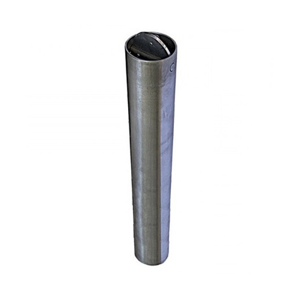

Пробоотборник ПО-45-330 330мл
Артикул: 0359
Контур-М
Раздел: Мерники и пробоотборники · АЗС
Цена и наличие — по запросу. Поставляем оригинал и аналоги. Доставка по России.
Модификации и размеры (3)
- Пробоотборник ПО-45-330 330мл · арт. 0359
- Пробоотборник ПО-80 - 1л · арт. 0371
- Пробоотборник ПО-45-500 500мл · арт. 0373
Подберём нужный вариант — уточните при запросе.
Описание
Пробоотборник ПО-45-330 330мл производства Контур-М — позиция из раздела «Мерники и пробоотборники» для АЗС. Компания SYNDICAT поставляет оборудование и комплектующие для автозаправочных и газозаправочных станций по всей России. Цена и наличие «Пробоотборник ПО-45-330 330мл» — по запросу: оставьте заявку или позвоните, подберём оригинал или аналог и рассчитаем доставку.